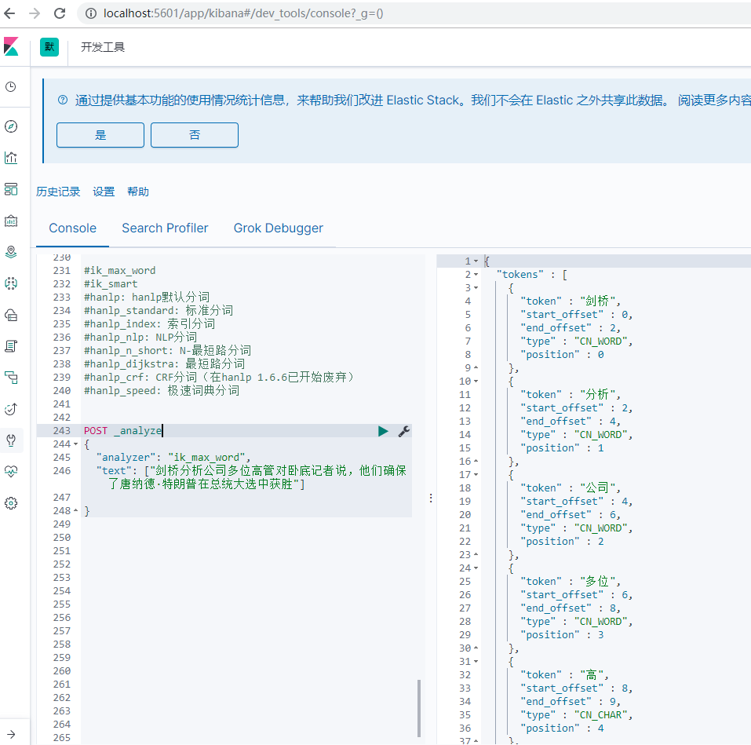

背景说明
跟着极客时间上的光头老师操作，使用docker-compose的方式启动ES集群，第二章安装IK和HanLP分词器。
可他没讲docker的安装方式，而且我是基于windows安装的docker，所以有了这个文章做记录。
docker-compose.yaml文件是完全拷贝的：
1 | version: '2.2' |
安装过程
本地ES安装插件脚本
这是常规的ES安装脚本，看完docker-compose.yaml文件，里面没有配置本地docker的地址，所以可以确定这个命令只是给本地的ES安装插件，对docker容器是无效的。
1 | elasticsearch-plugin install https://github.com/medcl/elasticsearch-analysis-ik/releases/download/v7.1.0/elasticsearch-analysis-ik-7.1.0.zip |
docker容器安装ES插件
这段是网上找的，照着操作，可是网络不给力，试了一晚上都没成功。
1 | docker-compose exec es01 elasticsearch-plugin install https://github.com/medcl/elasticsearch-analysis-ik/releases/download/v7.2.0/elasticsearch-analysis-ik-7.2.0.zip |
等了几小时，出现这种错误，内心是难以平复的。
1 | D:\docker\7.x-docker-2-es-instances>docker-compose exec elasticsearch elasticsearch-plugin install https://github.com/medcl/elasticsearch-analysis-ik/releases/download/v7.1.0/elasticsearch-analysis-ik-7.1.0.zip |
通过file协议安装
无意间通过浏览器直接把elasticsearch-analysis-ik-7.1.0.zip下载了，尝试通过file协议安。
结果是找不到文件，又是内心难以平复。
1 | D:\docker\7.x-docker-2-es-instances>docker-compose exec elasticsearch elasticsearch-plugin install file:///D:/docker/7.x-docker-2-es-instances/elasticsearch-analysis-ik-7.1.0.zip |
进入docker容器再通过file协议安装
先从本地拷贝到docker容器：
1 | D:\docker\7.x-docker-2-es-instances>docker cp D:/elasticsearch-analysis-ik-7.1.0.zip es7_02:/opt/elasticsearch-analysis-ik-7.1.0.zip |
再进入docker:
1 | docker exec -it es7_01 /bin/bash |
最后执行安装：
1 | [root@1105e84f27f9 elasticsearch]# cd plugins/ |
验证IK安装成功
1 | POST _analyze |
